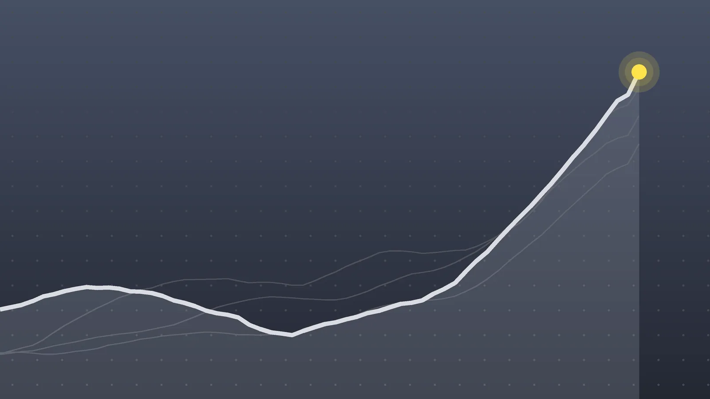

PoliticsExplainer
Russia Sanctions: Trump Waives Graham Act Penalties Before Start
Congress passed the sanctions by wide bipartisan margins a month ago. The waiver ties the fight over Ukraine to the price of diesel, two weeks before the midterms.

Quick take
- The Sanctioning Russia and Iran Act of 2026, named for Lindsey Graham, passed the Senate 86-11 and the House 262-159 on Sept. 16.
- The waived measures included tariffs of up to 500% on Russian goods and up to 100% on top buyers of Russian oil and gas.
- The White House says enforcing the sanctions would get in the way of peace talks between Ukraine and Russia.
- Republican Sens. Thom Tillis and John Cornyn joined Democrats in criticizing the move, and Ukraine’s president called it wrong.
Why it's trending President Trump signed an order late Friday, Oct. 16, waiving new Russia sanctions and tariffs that were due to take effect Oct. 18, drawing criticism from senators of both parties.
What happened
President Donald Trump has switched off most of the new Russia sanctions that Congress passed in September. Late on Friday, Oct. 16, he signed an executive order waiving the penalties in the Sanctioning Russia and Iran Act of 2026, known as the Graham Act, two days before they were scheduled to start on Oct. 18, Axios and ABC News report.
In a certification sent to Congress, Trump said the waiver serves the “national interests of the United States.” A White House spokesperson, Taylor Rogers, said enforcing the sanctions would hamper U.S. efforts to broker a peace deal between Ukraine and Russia, and that the president can use the authorities at any time.
Sanctions already in place under earlier executive orders still stand. What’s blocked is the new layer of pressure the law was meant to add.
What the Graham Act would have done
The law is named for Sen. Lindsey Graham of South Carolina, who died suddenly in July. It cleared Congress on Sept. 16 by wide margins: 86-11 in the Senate and 262-159 in the House. Trump signed it later that month.
According to ABC News, the waiver sets aside these measures:
| Measure | What it targeted |
|---|---|
| Tariffs up to 500% | All Russian goods, including oil and gas |
| Tariffs up to 100% | The five biggest ongoing buyers of Russian crude and gas, plus the five countries doing most to help Russia dodge oil sanctions |
| Bank sanctions | Foreign banks doing major business with Russian state banks, and messaging systems used to evade sanctions |
| Investment bans | U.S. purchases of Russian government debt and U.S. investment in Russia |
| Payment limits | U.S. banks and brokers handling transfers to the Russian government or officials |
The law also locked existing sanctions in place by statute. Waiving that piece means the president could later ease older sanctions on his own, ABC notes.
The so-called secondary tariffs would have landed mainly on countries, not Russia itself. Axios points out that the biggest buyers of Russian oil are China and India, so the waiver also avoids a new trade clash with both.
Why diesel is part of the story
The waiver follows a separate deal. On Oct. 9, Trump announced that Russia would supply global markets with more than 4.8 million tons of diesel, according to TIME, citing his Truth Social post. The Treasury Department then issued a temporary license allowing Russian diesel transactions, including imports into the U.S., through April 7, 2027.
That deal and the Graham Act pulled in opposite directions. Without the waiver, the law would have required tariffs on Russian fuel products like diesel and sanctions on the tankers carrying them.
Fuel prices explain the timing. Diesel and gasoline costs have risen with the wars involving Iran and Ukraine, and the national average for gas was $4.29 a gallon on Oct. 18, according to AAA figures cited in a daily news briefing. Sen. Ted Cruz, R-Texas, who called the waiver a mistake, said he believed Trump was focused on fuel costs, Fox Business reports.
Economists TIME spoke with doubt the relief will show up at the pump. Columbia University’s Tatiana Mitrova expects a modest, delayed effect at most, and Brown University’s Jeff Colgan said the bigger result may be extra revenue for Russia.
Who says what
- Trump told reporters it was “a very good decision” for the country and the world.
- Republican critics: Sen. Thom Tillis of North Carolina called it “beyond irresponsible,” pointing to the 86-11 Senate vote. Sen. John Cornyn of Texas said Graham “would be appalled.” Former U.N. Ambassador Nikki Haley called it a misjudgment of Putin. Earlier in the week, Sens. Mitch McConnell, Susan Collins, Tillis and Cornyn had urged Trump to drop the diesel deal and impose the sanctions.
- Graham’s successor: Sen. Darline Graham, R-S.C., appointed to her late brother’s seat, said she would rather keep pressure on Russia.
- Democrats: Senate Minority Leader Chuck Schumer said Trump was giving Russia’s economy “life support.” Sen. Richard Blumenthal of Connecticut, who helped write the law, and Rep. Don Beyer of Virginia also condemned it.
- A supporter in Congress: Rep. Thomas Massie, R-Ky., one of seven House Republicans who voted against the bill, welcomed the waiver.
- Ukraine: President Volodymyr Zelenskyy said the decision was wrong and helps only Russia.
What happens next
The waivers last until the president or the secretary of state decides more action is needed, and the law’s Russia provisions run until 2031. That means a future administration, or this one, could turn the penalties on without a new vote.
Congress has a narrower lever. The law lets lawmakers block any move to end sanctions under its peace-deal clause, and Cornyn has backed calls for an investigation. With early voting underway and the midterms on Nov. 3, expect the waiver to come up in Senate races.
Quick answers
What is the Graham Act?
It’s the Sanctioning Russia and Iran Act of 2026, named after the late Sen. Lindsey Graham. The law was passed in September to add sanctions on Russian officials, banks and its tanker fleet, plus steep tariffs on Russia and on major buyers of its oil and gas.
Did Trump lift all sanctions on Russia?
No. Sanctions imposed earlier by executive order remain. The waiver stops the new penalties in the Graham Act from taking effect.
Can the sanctions come back?
Yes. The White House says the president can use the authorities at any time, and the law stays on the books through 2031.
Sources
- ABC News Trump signs order waiving Graham Act sanctions on Russia, drawing backlash from some lawmakers and ZelenskyyOct. 17, 2026
- TIME What Trump's Waiver of New Russia Sanctions Means for UkraineOct. 17, 2026
- Axios Trump waives new Russia sanctions in the "national interests"Oct. 17, 2026
- Fox Business Trump faces bipartisan backlash over Russia sanctions waiver, causing top Republicans to break ranksOct. 18, 2026
Keep reading

Trump and Zelenskyy: Rift Deepens as Oslo Peace Talks Open
Trump says someone else should negotiate for Ukraine as Zelenskyy meets envoy Steve Witkoff in Oslo. What’s behind the split and what to watch next.

Louise Lucas Indicted: Virginia Senator Faces Marijuana Charges
Virginia state Sen. Louise Lucas was indicted Oct. 22 in a federal marijuana racketeering case. What prosecutors allege, her response and what comes next.

France Protests: 2,400 Arrests After Cost-of-Living Riots
France protests over living costs and schools turned into riots on Oct. 17-18. What happened, why people marched, and what Macron’s government does next.